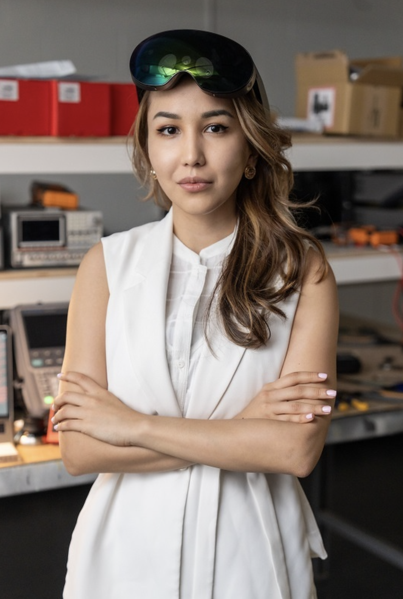
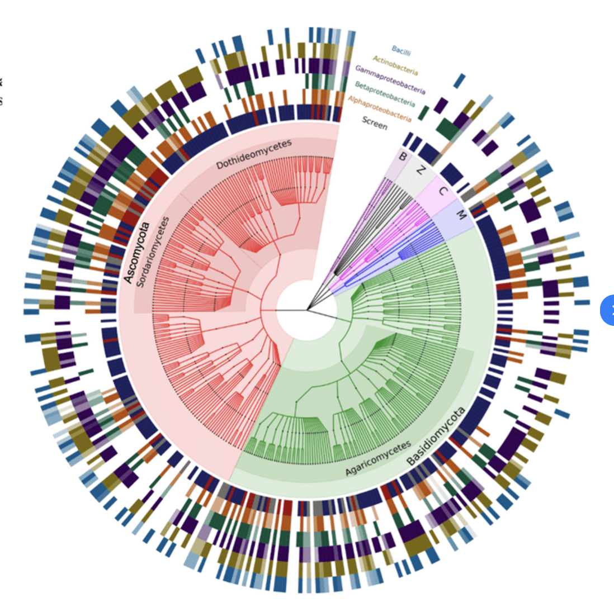
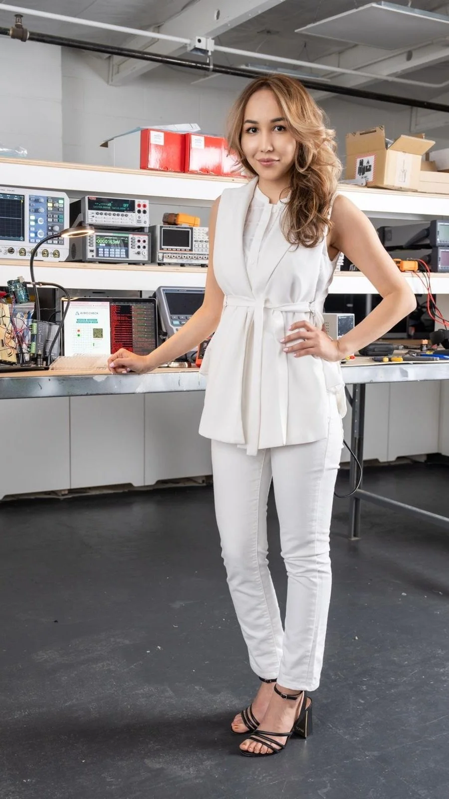
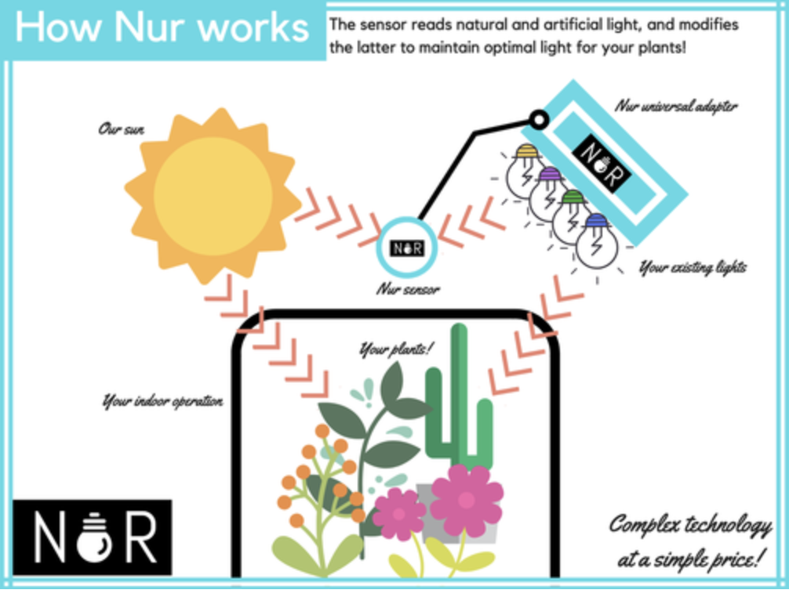
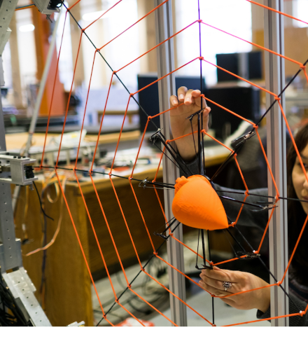
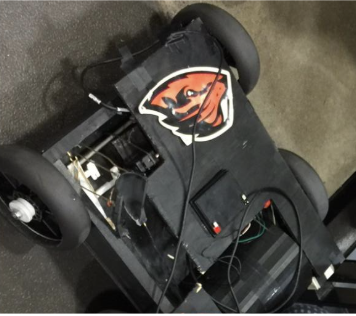
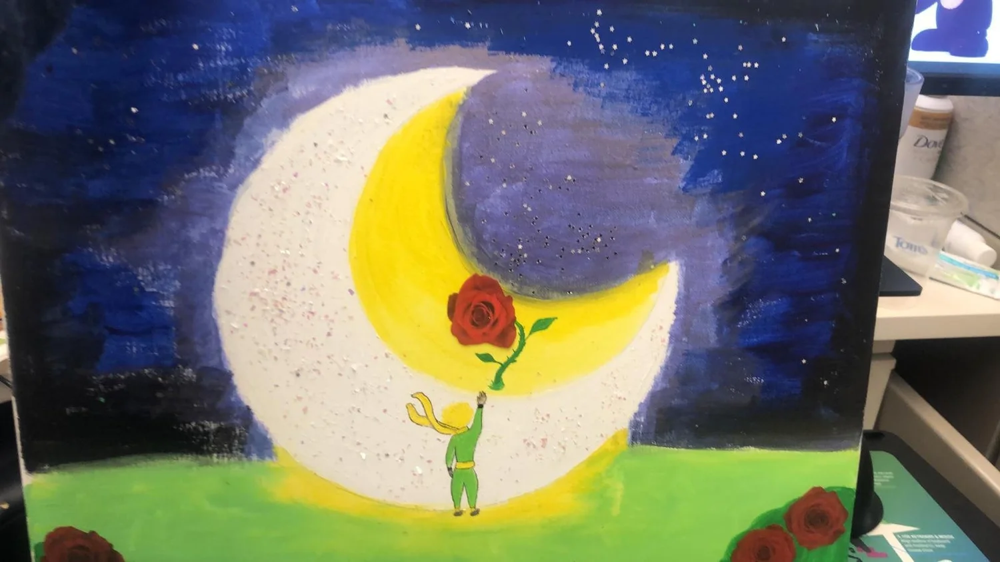

Engineering Physical Intelligence
I am a mechanical engineer and robotics founder focused on building intelligent physical systems.
Over the past decade I have worked across laboratory automation, humanoid robotics, and scientific infrastructure. I have automated workflows used by scientists at Genentech, Guardant Health, Personalis, and Hexagon Bio, and recently led development of humanoid teleoperation systems for laboratory environments.
My interests lie at the intersection of robotics, AI, automation, and manufacturing: building machines that extend human capability and accelerate scientific and industrial progress.
Projects

Lab Automation at Hexagon Bio50+ Hamilton methods for drug discovery

Humanoids for the LabRaised VC funding for lab automation

Nur LightingSemi-finalist, Women Entrepreneurship competition

Balancing Ozone2nd place in physics, Paris, at 14

SpiderHarpTurning mechanical vibrations into music

Mechanical Engineering ProjectsAero design, robots, capstone

ArtPainting, poetry and drawing